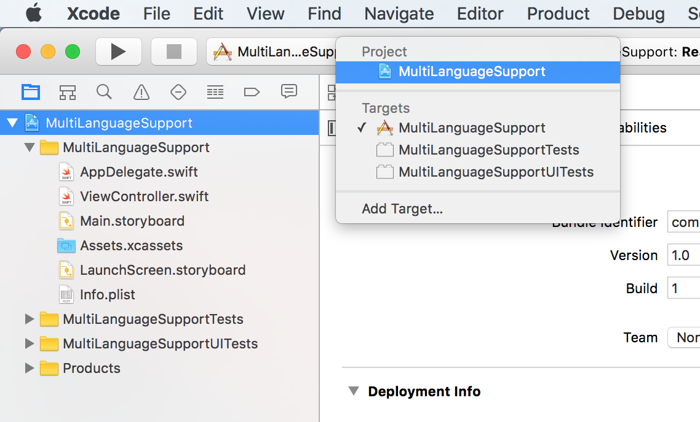
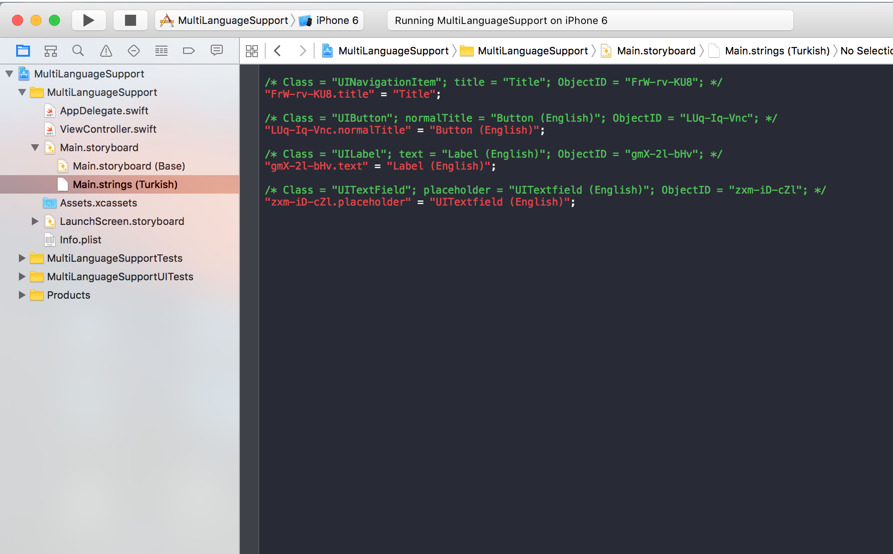
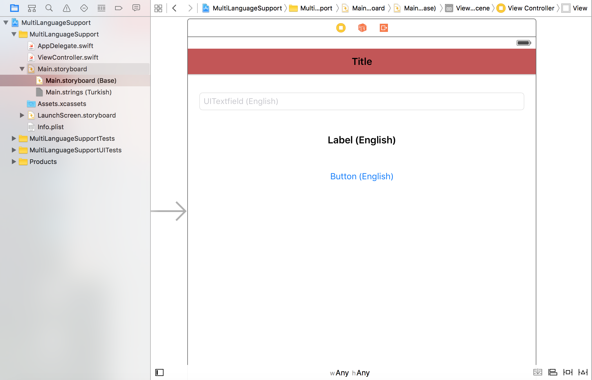
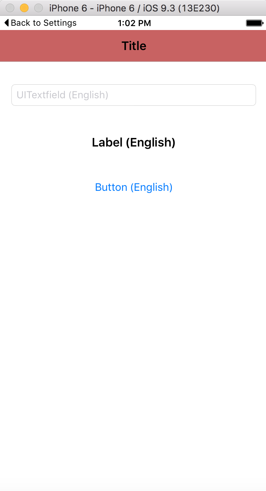
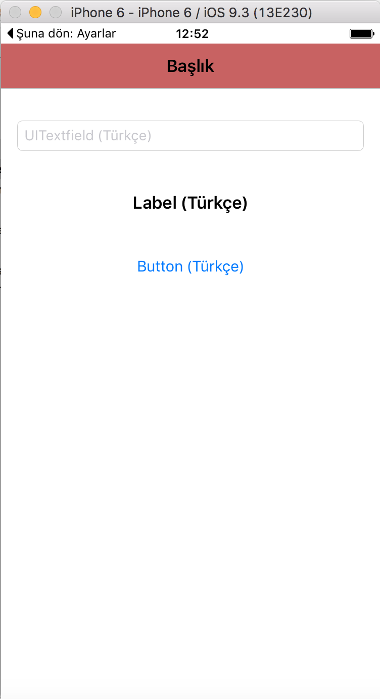
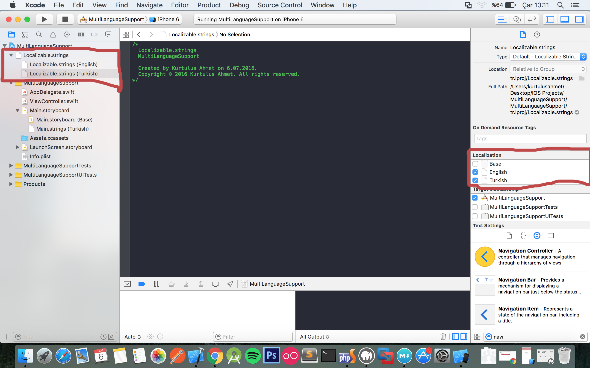
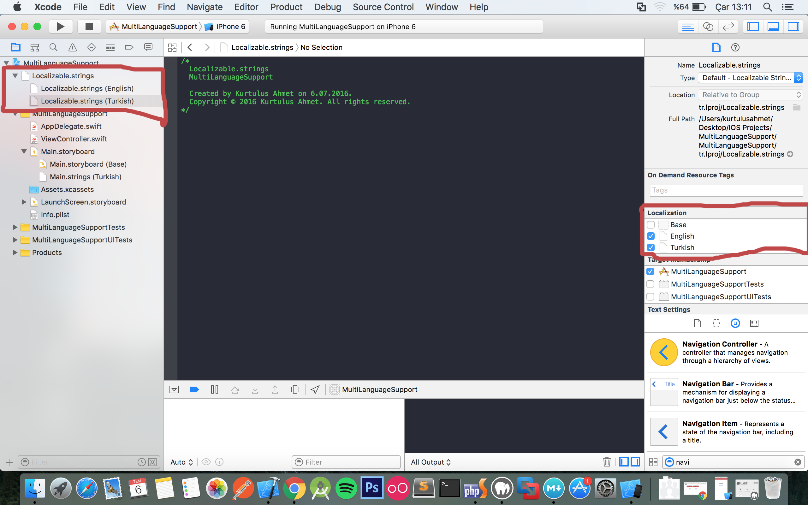
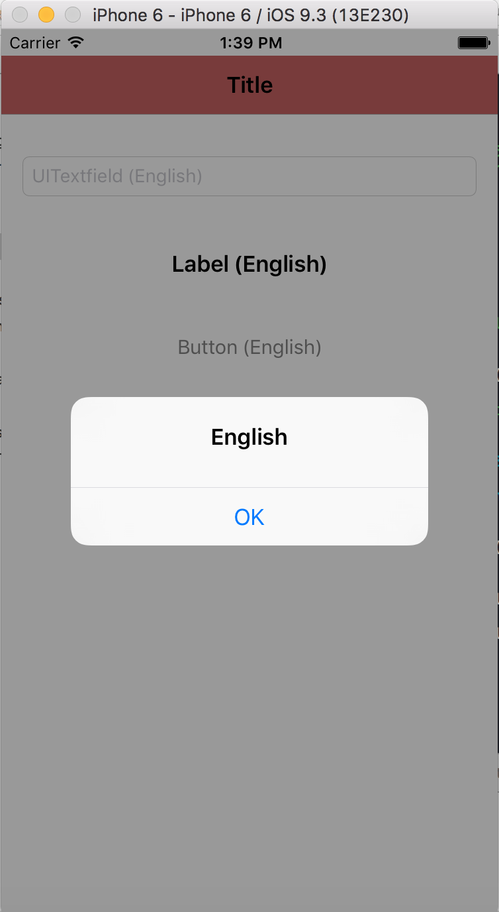
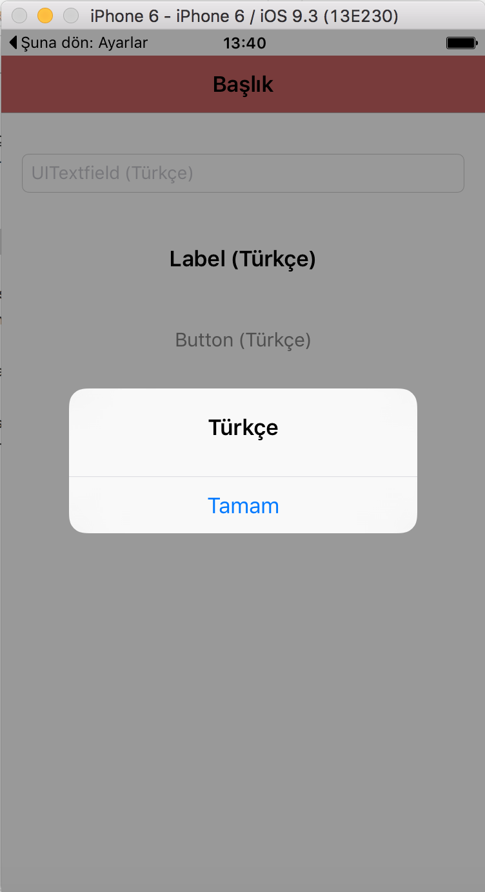

IOS Uygulamaları için Çoklu Dil Desteği
Geliştirdiğiniz uygulamalara geliştirme dili dışından yeni diller eklemek isteyebilirsiniz. Bunun için ufak bir kaç düzenleme yapmanız gerekecek. Şimdi sizlerle adım adım ios uygulamamıza çoklu dil desteği sağlayacağız. Bunun için yeni bir proje oluşturalım.
Çoklu dil desteğini iki farklı şekilde sağlayabilirsiniz. Bunlardan biri direk storyboard üzerindeki Object ID değeri üzerinden yapılır, diğeri de ekstra bir dil dosyası ile sağlanır.
Projemizi oluşturduktan sonra proje ayarları kısmından sol üst köşeye tıklayıp Project başlığı altındaki proje ismine tıklıyoruz.

Ardından Localizations sekmesinden ( + ) ikonuna tıklayarak destek vereceğimiz dili seçiyoruz. Benim oluşturduğum uygulama, geliştirme dili olarak İngiliz kullandığından ben destek vereceğim dil olarak Turkish(tr) seçiyorum. Dil seçimini yaptıktan sonra proje klasör yapımız ve Main.string dosyamız aşağıdaki gibi olacaktır. Eğer daha öncesinden storyboard içerisine ekleme yaptıysanız Main.string dosyamıza otomatik olarak Object ID ile aktarılacaktır.

Ben daha öncesinde storyboard dosyasına birer adet NavigationBar, Textfield, Label ve Button ekledim.

Main.string dosyamız aşağıdaki gibi değiştirdikten sonra uygulamamızı cihaz dili Türkçe ve İngilizce iken açtığımızda görüntü şöyle olaraktır.
/* Class = "UINavigationItem"; title = "Title"; ObjectID = "FrW-rv-KU8"; */
"FrW-rv-KU8.title" = "Başlık";
/* Class = "UIButton"; normalTitle = "Button (English)"; ObjectID = "LUq-Iq-Vnc"; */
"LUq-Iq-Vnc.normalTitle" = "Button (Türkçe)";
/* Class = "UILabel"; text = "Label (English)"; ObjectID = "gmX-2l-bHv"; */
"gmX-2l-bHv.text" = "Label (Türkçe)";
/* Class = "UITextField"; placeholder = "UITextfield (English)"; ObjectID = "zxm-iD-cZl"; */
"zxm-iD-cZl.placeholder" = "UITextfield (Türkçe)";
Ekran Görüntüleri
 
Burda işlem tamam. Şimdi en başta bahsettiğimiz ekstra dil dosyasını kullanarak uygulamamıza çoklu dil desteğini sağlayalım. Bunun için New File -> Resource -> String File yolunu kullanarak Localizable isimli bir string dosyası oluşturuyoruz. Dosya üzerine tıkladıktan sonra sağ tarafta bulunan kısımdan Localize.. işlemini gerçekleştiriyoruz. (Tanımlı diller için ayrı string dosyalarının otomatik olarak tanımlanmasını sağlıyoruz)
 

Bu işlemlerin ardından destek verdiğimiz dillere ait Localizable.string dosyalarını aşağıdaki gibi düzenliyoruz. Burada dikkat etmemiz gereken bir nokta var. Anahtar değer yapısında çalışan bu kısımda iki dosya içinde sol tarafta bulunan anahtar değerinin aynı olmasına dikkat ediyoruz.
Localizable.string (English)
/*
Localizable.strings
MultiLanguageSupport
Created by Kurtulus Ahmet on 6.07.2016.
Copyright © 2016 Kurtulus Ahmet. All rights reserved.
*/
"alert_title" = "English";
"alert_btn" = "OK";
Localizable.string (Turkish)
/*
Localizable.strings
MultiLanguageSupport
Created by Kurtulus Ahmet on 6.07.2016.
Copyright © 2016 Kurtulus Ahmet. All rights reserved.
*/
"alert_title" = "Türkçe";
"alert_btn" = "Tamam";
Dosyalarımızı düzenledikten sonra Alert Controller çağırımı gerçekleştiriyoruz. Burada alert başlığını ve buton başlığını Localizable dosyalarımızdan çekmek için NSLocalizedString yapısını kullanıyoruz. Burada verileri anahtar değerimize ve cihaz dilimize göre uygun olan dosyadan çekiyoruz.
let titleString = NSLocalizedString("alert_title", comment:"") // Dil dosyalarından uygun başlığı çekiyor
let btnString = NSLocalizedString("alert_btn", comment:"") // Dil dosyalarından uygun buton başlığını çekiyor
let alert = UIAlertController(title: titleString, message: "", preferredStyle: .Alert)
alert.addAction(UIAlertAction(title: btnString, style: .Default, handler: { (action) -> Void in
}))
self.presentViewController(alert, animated: true, completion: nil)
Gerekli düzenlemeleri yaptıktan sonra uygulamaları çalıştırdığımızda ekran görüntüleri aşağıdaki gibi olacaktır.
 
Umarım işinize yarar. Kolay gelsin.